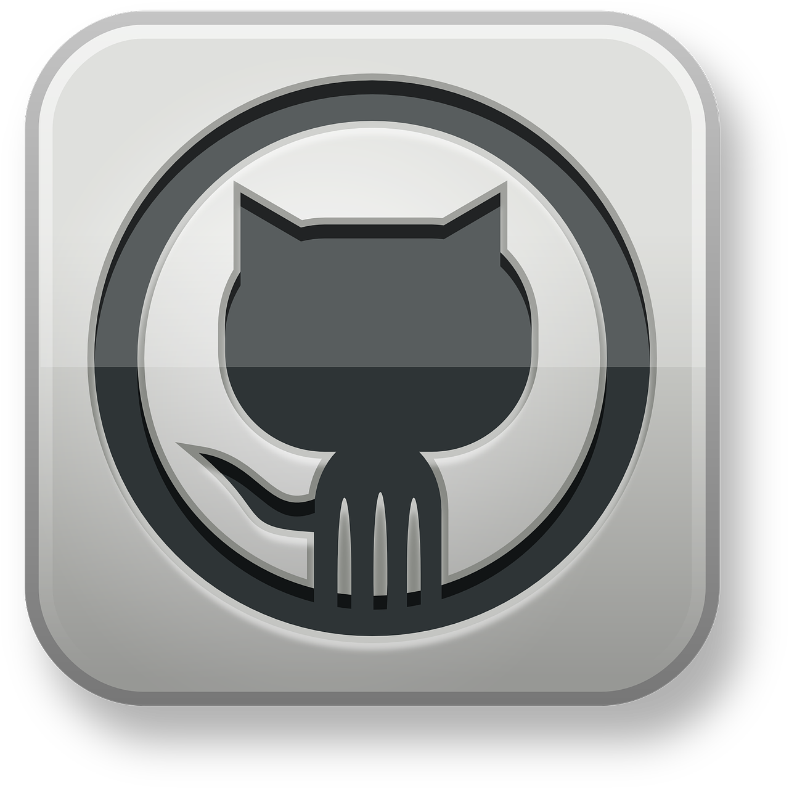
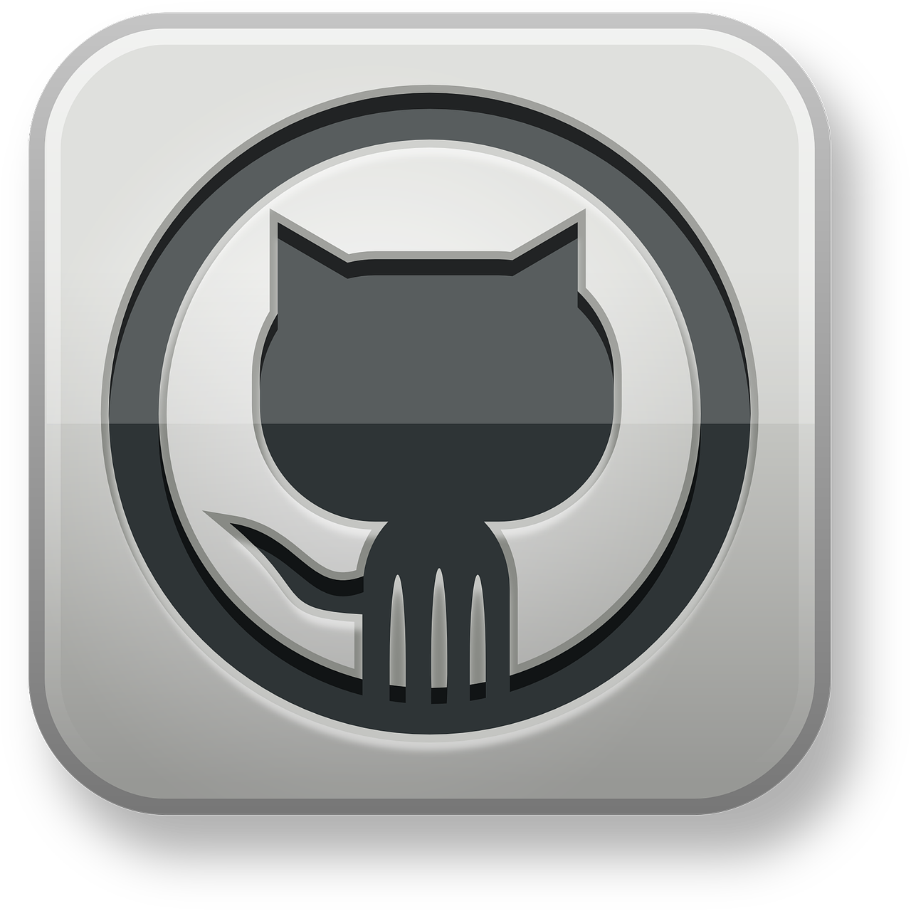

My bigger prjects so far!
All code is on GitHub including some smaller projects that I have done!
I am constantly working on new projects, so be sure to come back and
check out my other projects!
 

Vocal Social is a mobile app I am working on using Python and Kivy. Currently in the very beginning stages of work.

This is my Minesweeper Project, my final project for Computer Programming I.
It was coded in Python with the graphics.py library.
I worked with a partner and had two weeks to finish the open-ended project.